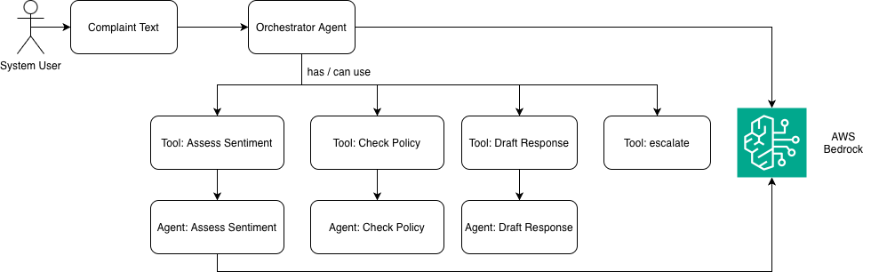

Step 5: Agentic Loop¶
In an agentic loop, the model decides which agents to call rather than your code. The AI model decides.
The key difference¶
In the previous example (agentic pipeline), your code says: "always call sentiment, then policy, then draft."
In an agentic loop, your code says: "you are a routing agent, here are tools you can call, decide which ones to use and in what order. Do not take any action yourself."
The model looks at the complaint, looks at the available tools, and chooses what to call, in what order, and when to stop. Your code just dispatches whatever the model requests.
Notice that not every tool invokes an agentic call. The escalate tool simply returns a

Running it¶
cd /workspace/code/monitor-production/step5-agentic-loop
export OTEL_EXPORTER_OTLP_ENDPOINT=http://localhost:4318
python app-instrumented.py # run all complaints
python app-instrumented.py C001 # run a specific complaint
How it works¶
This demo uses two distinct types of LLM call working together.
The orchestrator is an LLM call whose only job is to decide what to do. It receives the complaint and a list of available tools. It either requests one or more of them, or produces a final response when it has everything it needs. It never does any of the actual work itself: no sentiment scoring, no policy checking, no writing.
Sub-agents are separate, focused LLM calls. They are the same sentiment, policy, and draft agents from the pipeline. The orchestrator does not call them directly. Instead, it requests a tool, and your Python code calls the sub-agent on its behalf.
What is a tool?¶
A tool is a function definition you give to the orchestrator so it knows what it can ask for. Each tool has a name, a description, and a list of parameters. The orchestrator reads the descriptions to understand when and why to use each one. It never runs the tool itself. When it decides a tool is needed, it returns a structured request. Your code reads that request, runs the corresponding function, and adds the result back into the conversation:
# The orchestrator's response contains the tool it wants called:
tc.function.name # e.g. "assess_sentiment"
tc.function.arguments # e.g. '{"complaint": "My order arrived broken..."}'
# Your code dispatches it:
result = _dispatch(tc.function.name, json.loads(tc.function.arguments))
We give the orchestrator four tools:
TOOLS = [
{
"type": "function",
"function": {
"name": "assess_sentiment",
"description": "Assess the urgency and sentiment of the complaint.",
...
},
},
{
"type": "function",
"function": {
"name": "check_policy",
"description": "Check what remedies company policy allows for this complaint.",
...
},
},
{
"type": "function",
"function": {
"name": "draft_response",
"description": "Draft a response to send to the customer.",
...
},
},
{
"type": "function",
"function": {
"name": "escalate",
"description": "Escalate to a human. Use when complaint involves legal threats, bank disputes, or repeated failures.",
...
},
},
]
Three of those tools work by calling a sub-agent. The fourth, escalate, has no LLM behind it at all:
def _dispatch(tool_name, args):
if tool_name == "assess_sentiment":
return _call_agent("sentiment", args["complaint"]) # sub-agent LLM call
elif tool_name == "check_policy":
return _call_agent("policy_checker", ...) # sub-agent LLM call
elif tool_name == "draft_response":
return _call_agent("draft_response", ...) # sub-agent LLM call
elif tool_name == "escalate":
return json.dumps({"escalated": True, "reason": args["reason"]}) # plain Python, no LLM
Descriptions are instructions
The orchestrator reads the description field of each tool to decide when to use it and what arguments to pass. Writing clear, specific descriptions is the primary way you control the orchestrator's behaviour.
The loop¶
Each iteration sends the full conversation history to the orchestrator and asks what to do next. The orchestrator either requests tools, in which case the loop dispatches them and goes again, or produces a final text response and stops.
while True:
# Ask the orchestrator: "what should we do next?"
response = client.chat.completions.create(
model=MODEL,
messages=messages, # full conversation history
tools=TOOLS,
tool_choice="auto", # model decides: call a tool, or stop
)
choice = response.choices[0]
# If the model is done (no more tools to call)
if choice.finish_reason == "stop":
print(choice.message.content)
break
# Otherwise, dispatch the tool(s) the model requested
for tc in choice.message.tool_calls:
result = _dispatch(tc.function.name, json.loads(tc.function.arguments))
# Add the tool result to the conversation history
messages.append({
"role": "tool",
"tool_call_id": tc.id,
"content": result,
})
if tc.function.name == "escalate":
return # escalation is terminal
messages is the orchestrator's only memory. Every turn appends to it: the orchestrator's requests and every tool result. When the orchestrator is called again next turn, it can see the full history of what has happened so far.
Exercise: swap the orchestrator's routing for a decision model
The orchestrator's job is to pick one option from a fixed list of tools. That is the same shape of problem a decision model is built for: it chooses between predefined options and returns a confidence score, rather than generating free text. Strands Decider 2B lists tool selection and routing as core use cases.
In Step 4 the exercise swaps a single agent. Here you would swap the router itself. A small decision model could make the "what next?" choice each turn, instead of a 120B-parameter LLM resending the full messages history every time.
As in Step 4, the model is a bit too heavy for the local Codespace, so we leave this as an exercise. If you have the resources, try it:
- Run a decision model locally, or on hardware that can handle it.
- Replace the orchestrator
chatcall with the decision model, using the four tool names as its options. - Keep the final response coming from
draft_response(a decision model selects, it doesn't write). - Compare
triage.turns, per-turn latency and orchestrator token usage in Dynatrace against the LLM orchestrator.
The trace structure¶
In a pipeline, the trace structure is fixed before the app runs. In an agentic loop, it depends on what the model decided to do:
triage COMPLAINT-001
chat openai.gpt-oss-120b (turn 1 - orchestrator deciding)
execute_tool assess_sentiment
invoke_agent sentiment
chat openai.gpt-oss-120b (sub-agent)
execute_tool check_policy
invoke_agent policy_checker
chat openai.gpt-oss-120b
execute_tool draft_response
invoke_agent draft_response
chat openai.gpt-oss-120b
chat openai.gpt-oss-120b (turn 2 - orchestrator producing final response)
For a simple complaint, you might see 2 turns and 3 tools. For an ambiguous or complex complaint, you might see 3 turns, different tools, or the model choosing to skip some steps.
The span hierarchy¶
# Root span: the whole complaint
with tracer.start_as_current_span(f"triage {cid}") as root:
root.set_attribute("triage.outcome", ...)
root.set_attribute("triage.turns", turn)
# Per-turn orchestrator span
with tracer.start_as_current_span(f"chat {MODEL}") as span:
span.set_attribute("loop.turn", turn)
response = client.chat.completions.create(...)
# Per-tool-call span (inside _dispatch)
with tracer.start_as_current_span(f"execute_tool {tool_name}") as tool_span:
tool_span.set_attribute("tool.name", tool_name)
# Per-sub-agent span (inside _call_agent)
with tracer.start_as_current_span(f"invoke_agent {agent_name}") as agent_span:
with tracer.start_as_current_span(f"chat {MODEL}") as llm_span:
# actual LLM call
This nesting is automatic. OTel tracks the current active span and makes new spans children of it. You just write start_as_current_span and the hierarchy builds itself.
Key attributes to notice¶
loop.turnon each orchestrator span: how many iterations the model neededtriage.outcomeon the root span:"responded"if the model calleddraft_responseand finished, or"escalated"if the model calledescalateinsteadtriage.turnson the root span: total number of orchestrator turns needed to reach that outcometool.nameon execute_tool spans: which tools did the model choose?tool.result_length: how much data did each tool return?
The orchestrator prompt¶
ORCHESTRATOR_PROMPT = """
You are a customer support routing agent. Your only job is to decide
which tools to call and in what order. You do not assess, judge, write,
or take any action yourself.
You have tools available to assess sentiment, check policy, draft a
response, and escalate. Use your judgement about which are necessary
and in what order given the complaint. You are not required to call all
of them.
Do not write any response to the customer yourself. Do not summarise
or interpret tool results. Only route.
"""
This prompt is carefully written to prevent common failure modes:
- "You do not assess or judge": stops the model from skipping the sentiment tool and deciding urgency itself
- "Do not write any response yourself": stops the model from drafting a reply without going through the draft_response tool
- "Only route": keeps the model focused on its job
Without this guardrail, the model tends to take shortcuts: it might answer the customer directly instead of calling draft_response, or decide a complaint is low urgency without calling assess_sentiment.
Prompts are guidance, not rules
Words like "must", "never", and "only" in a system prompt are instructions the model is trained to follow, not technical constraints. The model can still ignore them, particularly on unusual or edge case inputs.
AWS Bedrock Guardrails address a related but different problem: they apply content policies at the input and output boundary, blocking harmful content, redacting sensitive data, or restricting topics. That layer is real and effective for what it does. But it operates on content, not on orchestration decisions. It won't prevent the model from skipping a tool call or taking a reasoning shortcut.
Prompt instructions and guardrails are complementary, not interchangeable. Observability is how you know when either is not working.
Agentic loop vs pipeline: which to use?¶
| Pipeline | Agentic Loop | |
|---|---|---|
| Who decides what runs? | Your code | The model |
| Cost predictability | Predictable | Variable |
| Flexibility | Low | High |
| Debugging | Straightforward | Harder (model decisions are opaque) |
| Observability importance | Helpful | Essential |
| Best for | Well-defined, stable workflows | Complex tasks where you want the model to adapt |
The agentic loop shines when complaints are diverse and the model can skip unnecessary steps (e.g. not checking policy if it decides to escalate immediately). But because behaviour is variable, observability is no longer optional. It's how you know what the model is actually doing in production.
What you'll see in Dynatrace¶
After running, wait about 60 seconds for data to arrive, then query from the terminal.
Open a trace for a complaint and you'll see something like:
- The root
triagespan withtriage.outcomeset torespondedorescalated, andtriage.turnsshowing how many orchestrator turns it took - The orchestrator's per-turn
chatspans, each with its own token count execute_toolspans showing which tools were called- Nested sub-agent and LLM spans inside each tool
Compare two complaints side-by-side:
- A simple one might have triage.turns=2 and 3 tool calls
- A complex or borderline one might have triage.turns=3 and 4–5 tool calls (including a retry or clarification)
- An obvious escalation might skip policy and draft entirely
This variance is exactly what you're paying for with an agentic architecture, and exactly why you need traces to understand it.
Check triage outcomes and turns¶
dtctl query 'fetch spans
| filter service.name == "support-triage-loop"
| filter transaction.is_root_span == true
| fieldsAdd dur_ns = toLong(duration)
| fieldsAdd duration_readable = concat(toString(tolong(dur_ns / 60000000000)), "m ", toString(round((dur_ns / 1000000000) - (tolong(dur_ns / 60000000000) * 60), decimals:1)), "s")
| fields start_time, complaint.id, complaint.customer, triage.outcome, triage.turns, duration_readable
| sort start_time desc
| limit 10'
triage.turns tells you how many orchestrator iterations the model needed before it stopped. A higher number means more back-and-forth before a decision.
See which tools the model chose¶
dtctl query 'fetch spans
| filter service.name == "support-triage-loop"
| filter gen_ai.operation.name == "execute_tool"
| fields start_time, trace.id, tool.name, tool.result_length
| sort start_time desc
| limit 20'
This shows you the exact sequence of tool calls the model requested. All spans sharing the same trace.id belong to one run, so if you run C001 twice you can compare the two traces side by side. Look for complaints where the model skipped tools (e.g. escalating without calling check_policy) or called them in an unexpected order.
Compare orchestrator vs sub-agent token usage¶
dtctl query 'fetch spans
| filter service.name == "support-triage-loop"
| filter gen_ai.operation.name == "chat"
| fieldsAdd agent = coalesce(gen_ai.agent.name, "orchestrator")
| summarize
calls = count(),
avg_input_tokens = round(avg(gen_ai.usage.input_tokens), decimals:0),
avg_output_tokens = round(avg(gen_ai.usage.output_tokens), decimals:0),
by: {agent}
| sort avg_input_tokens desc'
The orchestrator's gen_ai.agent.name is null (it is not a sub-agent), so the query labels it orchestrator. Sub-agents appear by name. Orchestrator input tokens grow each turn because the full conversation history is sent every iteration — this is where loop costs can creep up.
Check the escalation rate¶
dtctl query 'fetch spans
| filter service.name == "support-triage-loop"
| filter transaction.is_root_span == true
| summarize count(), by: {triage.outcome}'
What's next?¶
In Step 6, we take the same single-call instrumentation from Step 2 and adapt it for streaming responses, adding a new metric that only makes sense in a streaming context: time-to-first-chunk.